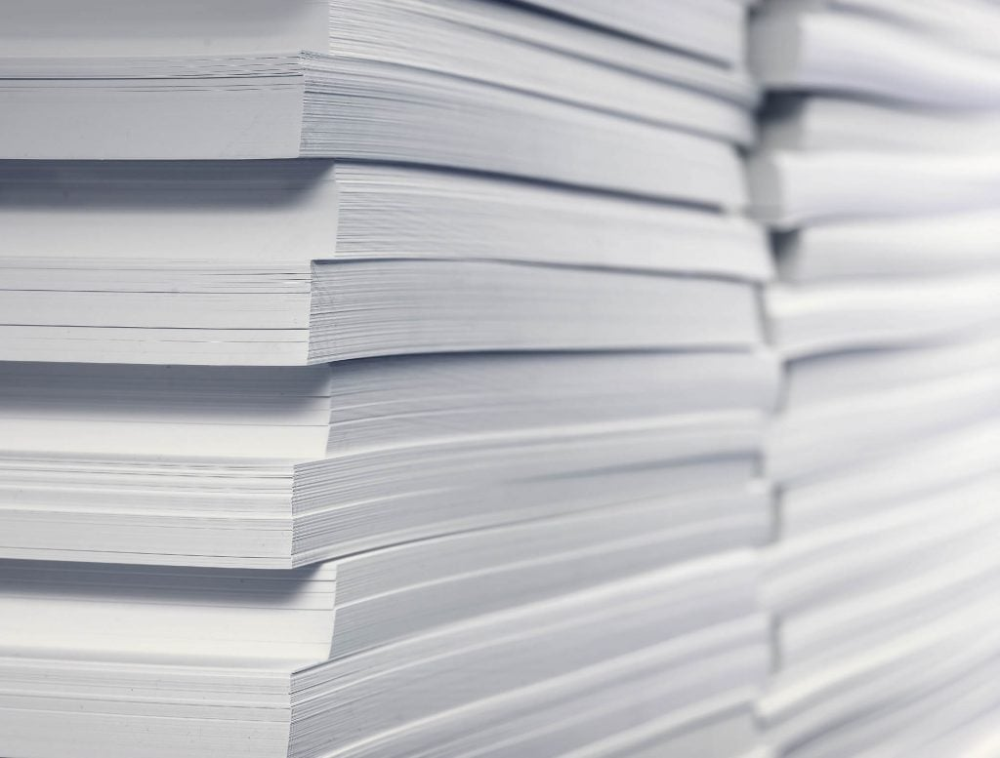
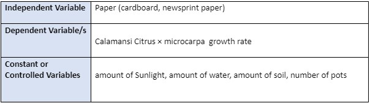

SCIENCE S.I.P
Effects on the Calamansi Citrus × microcarpa (Calamansi) growth rate with composter as paper.
Background Of This Project
 The background of the study is that if paper can be used in compost for the plants around the environment as a fetilizer. Paper can be use as a compost/Fetilizer for the plants because Paper was made from it so there are still organic matter and atoms that can be mix and use as the compost or fertilizer for the plants. And also background studies shows that Paper can help and protect the garden from what the paper was once made of. We also know that paper is recyclable and can be used again but we can also use it for our environment to grow and make our environment better again by using it as compost/fertilizer to grow our plants cause it can provide warmth, protection, and nutrients for the plant's roots, that can help in the SMAC institutions environment.
Background Of This Project The significance of of this study is to find out whether our crumbled paper that we dont use or has our mistakes in can actually be of help in the environment. We have thought of this as our topic because we definitely know that most people in the world just throw paper in the trash or just burn it which can actually have a bad effect on the environment. We know paper is recyclable and can be used again but, what if we use the paper on the environment. Paper as we know is made of wood, we as a group wanted to find out if we can pay back the trees by using its paper to help the environment that the trees and us live in.
Our Group's Problem
Our study group sought to determine whether paper can be utilized as compost, which would allow us to use it to improve our soil and potentially have varied effects on the surrounding area and the plants that grow there. And if any paper can assist and boost plant growth or can increase plant growth while supplying nutrients to the soil, it would be ideal for the environment's ability to support a strong growth system.
Our Group's Hypothesis
If we use 2 different kinds of paper as a compost, then it will have an affect on the growth rate of the Calamansi Citrus × microcarpa (Calamansi)
The Experiment's Variables

As you can see, we will use 2 different kinds of paper so we can also compare both of the paper's affect on the soil and on the plant.